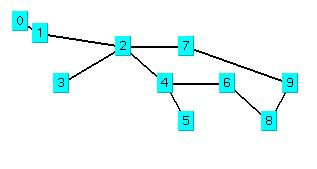

New to Java? We'll help you get started with our revised beginner's tutorial, or our free online textbook.
|
Get the latest Java books |
||
|
h t t p : / /w w w . j a v a c o f f e e b r e a k . c
o m /
|
||
|
Menu Articles Using Java Applets Looking for Java resources? Check out the Java Coffee Break directory! |
Implementing Depth First SearchThere are two active Java applets in this book that show a demonstration of depth first and breadth first search . These two Java applets show a simple network:  Before we design and implement any search programs, we will "walk through" a search of this simple network, trying to find a path from node "0" to node "9". Specifically, we will manually perform a depth first search. Running the depth first search appletEditor's note : The source code for the applet is accessible here, and also relies on SearchApplet.java.
In the file DepthFirstSearch.java, we define the positions of nine test nodes: addNode("0", 0.0f, 0.0f);
addNode("1", 1.0f, 1.0f);
addNode("2", 5.0f, 2.0f);
addNode("3", 2.0f, 5.0f);
addNode("4", 7.0f, 5.0f);
addNode("5", 8.0f, 8.0f);
addNode("6", 10.0f, 5.0f);
addNode("7", 8.0f, 2.0f);
addNode("8", 12.0f, 8.0f);
addNode("9", 13.0f, 5.0f);
In the above figure showing our sample network, we define the "links" in the following order: addLink(0,1);
addLink(1,2);
addLink(2,3);
addLink(2,4);
addLink(4,5);
addLink(4,6);
addLink(6,8);
addLink(8,9);
addLink(2,7);
addLink(7,9);
The order that the links are defined is important in a depth first search. if we start at node "0" and search to node "9", then we find the first link leaving node "0" (in this case link "0" to "1"). Then we take the first link leaving node "1" (in this case link "1' to "2"), etc. When we "run out of" links to explore from a given node, then we "back up" to the preceeding node, and explore all other links that leave that node. I am sure that you have already tried running the depth first search applet, right? Then you will have noticed that it found a rather long path from node "0" to "node "9". The depth first search applet stops when it has found a path. The breadth first search applet in Chapter 6 finds better paths, in general. I assume that you know how to program in Java, so I will just briefly explain what each method in classes SearchApplet and DepthFirstSearch. We will discuss the implementation of BreadthFirstSearch in Chapter 6. Methods in SearchApplet
Methods defined in class DepthFirstSearchThe class DepthFirstSearch is derived from the class SearchApplet and defines the following methods:
int [] copy_path(int [] path, int num_to_copy) - this is a helper method called by findPathHelper that copies a path array. If you have not already done so, return to the table of contents page, and experiment with the depth first search applet. |
||||
|
|
|||||